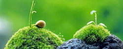
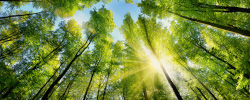

19 okt 2018Sam Barsan

Tuin & Licht Deel 2
Zuidelijk gelegen? Zicht op het westen? Deel 2 van onze spannende reeks. Hoe maak je optimaal gebruik van de lichtinval in je tuin.

19 okt 2018Sam Barsan
Zuidelijk gelegen? Zicht op het westen? Deel 2 van onze spannende reeks. Hoe maak je optimaal gebruik van de lichtinval in je tuin.
19 okt 2018Sam Vanderstraeten

Het is weer vrijdag! Wil je je tuin een klein beetje extra pit geven? Vandaag gebruikt Sam enkel een elastiekje en een zoutvatje om mooie tuindecoratie te maken.
19 okt 2018Sam Barsan

Sam legt uit welke paddestoelen giftig zijn en hoe je ze kan herkennen
19 okt 2018Sam Barsan

De start van een nieuwe reeks. Ons team van Sammen leert je in deze 5-delige reeks hoe je optimaal gebruik kan maken van de lichtinval
19 okt 2018Sam Barsan
Last van slakken? 10 handige tips om slakken te weren uit je tuintje.
19 okt 2018Sam Barsan

Dankzij jullie steun zijn we vastberaden om nog meer mensen te informeren over onze liefde voor Tuinen. Vanaf volgende maand zullen wij starten met een maandelijks magazine: de tuinvrienden van Sam
19 okt 2018Sam Barsan
De verkiezingen zijn achter de rug. Sam kijkt vandaag naar de impact daarvan op jouw tuin.
19 okt 2018Sam Barsan

De herfst staat voor de deur. Sam neemt je mee op de 3 mooiste bostochten door de Ardennen

Offerte aanvragen
Vraag een cursus aan
Privacy & Veiligheid
Jobs